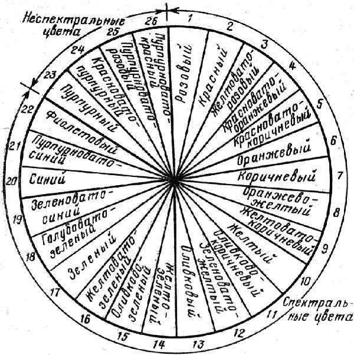
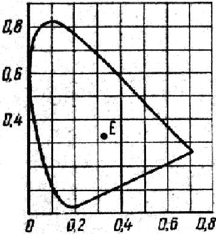

Цвет в мебели и в интерьере.

Окружающий мир человек воспринимает с помощью органов чувств: зрения, слуха, осязания, обоняния, вкуса, которые имеют важное значение в его жизнедеятельности. Более 80% информации человек получает благодаря зрительным ощущениям, возникающим в мозгу в результате попадания света на сетчатку глаза.
В процессе деятельности у человека наблюдается также тесная взаимосвязь анализаторов друг с другом, благодаря чему создается впечатление, будто цвет воспринимается не только зрением, но с участием слуха, осязания, обоняния и вкуса. Именно это свойство определяет возникновение различных ассоциаций, связанных с цветом. У человека в процессе восприятия внешней среды возникает обогащенное чувство цвета, придающее цвету эмоциональный влияние.
Цвет давно привлекает внимание ученых, художников, музыкантов, писателей. И надо признать, что труды М. Ломоносова, Леонардо да Винчи, И. Ньютона, Г, Гельмгольца и др., творческая деятельность выдающихся художников XVIII-XIX в.в. У. Тернера, Э. Делакруа и др. внесли значительный вклад в развитие науки о цвете. Тем не менее, и сегодня остаются проблемы, связанные с восприятием, измерением, систематизацией и применением цвета, решение которых призвано помочь нам лучше понять роль цвета и более эффективно его использовать.
Цвет можно оценивать исходя из критериев повседневной жизни и строго научно. В первом случае мы рассматриваем цвет как свойство предмета, например, мы говорим: снег белый, огурец зеленый, помидор красный и т.д. Цвет этих предметов не меняется для нас, в какое бы время суток и при каком бы освещении мы их ни созерцали. Такое восприятие цвета не всегда эффективно, оно не годится в искусстве и дизайне, так как вступает в действие явление одновременного цветового контраста, которое заключается в различном восприятии одного и того же цветового пятна на фоне, разном по цвету, но одной и той же светлоты.
Другое восприятие цвета связано с деятельностью головного мозга. Большинство наблюдаемых нами предметов нелюминесцирующие. Они видимы благодаря тому, что падающий на них свет отражается и, попадая в глаз, проходит через сетчатку, пересекая слой ткани, два слоя нервных клеток и слой многочисленных цветочувствительных рецепторных клеток. В результате сложных процессов свет кодируется в три сигнала (свет – темнота и два разностных цветовых сигнала), которые преобразуются в электрические пиковые разряды, передаваемые в кору головного мозга. Мозг реагирует на сигналы появлением ощущений, раскрывающих различные стороны восприятия предметов в процессе наблюдения: их размера, положения в пространстве, непрозрачности или прозрачности, блеска, текстуры. Таким образом, цвет может быть определен как ощущение, возникающее в мозгу в ответ на свет, попадающий на сетчатку глаза.
Однако существует еще одно условное определение цвета, принятое для использования в колориметрии (измерение цвета), которое основано на том, что при измерении света используется излучение, которое порождает восприятие.
Видимое излучение представлено в электромагнитном спектре интервалом длин волн 380-780 нм (1 нм = 10 м). При наблюдении света определенной длины волны мы воспринимаем цвет, ей соответствующий, например при длине волны 380 нм – фиолетовый, 680 нм – красный и т. д. Свет одной длины волны называется монохроматическим светом. Воспроизведенные им цвета имеют 100%-ю чистоту.
Цвета, которые можно охарактеризовать цветовым тоном, называются хроматическими. Цвета, которые не обладают этим свойством, называются ахроматическими. Так, мы воспринимаем ахроматический (не характеризующийся цветовым тоном) цвет, когда смотрим на светящуюся люминесцентную лампу. Мы также воспринимаем ахроматические цвета, когда наблюдаем белую, нейтральную серую или черную поверхность, освещенную люминесцентной лампой или дневным светом. Ахроматические поверхности отличаются лишь светлотой.
Цветовой тон характеризуется длиной волны ?, соответствующей преобладающему монохроматическому излучению. Кроме цветового тона, хроматические цвета отличаются насыщенностью и светлотой, которые являются свойством зрительного восприятия. Насыщенность характеризуется чистотой Р, определяемой содержанием монохроматического цвета по отношению к белому, и выражается в процентах или в долях единицы (для белого цвета Р = 0). Светлота цвета характеризуется отношением отраженного поверхностью светового потока ко всему падающему на нее световому потоку и оценивается коэффициентом отражения ?.
Коэффициент отражения абсолютно черного тела составляет 0, абсолютно белого – 100%, практически же он колеблется от 4 до 90% и для различных цветных поверхностей равен: для черной – 4%, красной – 13, зеленой – 16, желтой – 55, белой – 70-90%.
Цветовые тона, представленные монохроматическим излучением в диапазоне 380-780 нм, называются спектральными цветовыми тонами. Кроме того, имеются пурпурный, пурпурновато-красный и ряд соседних с красным цветовых тонов, не присутствующих в солнечном спектре или спектре любого источника, которые относятся к неспектральным цветовым тонам. Их можно получить с помощью смешения лучей двух или более монохроматических излучений. Цвета рассмотренных выше цветовых тонов называются соответственно спектральными и неспектральными.
Основные спектральные цвета – красный, зеленый и синий. Все остальные цвета спектра можно получить за счет аддитивного смешения цветов, т. е. соединения (смешения) света двух или более источников прежде, чем он достигнет глаза. При аддитивном смешении цветов энергия двух объединенных лучей является результатом сложения энергии двух первоначальных потоков и воспринимаемая яркость увеличивается. В «цветовом круге» (см. рис.) спектральные и неспектральные цвета замкнуты в круг и распределены так, как это обусловлено их последовательностью в спектре. Такое деление является условным, так как каждый цвет спектра переходит в соседний плавно, и нормальный человеческий глаз различает в действительности несравненно большее количество промежуточных спектральных цветов (около 200).

Рис. 5. Наименование цвета по методу ISCC-NBS
При аддитивном смешении существенно различающихся цветовых тонов, которые находятся на противоположных сторонах цветового круга, например красного и сине-зеленого, при соответствующих относительных интенсивностях световых потоков можно получить белый цвет. И таком случае два исходных цвета называются дополнительными цветами.
При смешении красок и красителей наблюдается процесс субтрактивного смешения. Субтрактивный процесс можно представить, пропуская луч солнечного света последовательно через два светофильтра, например желтый и зеленый. В результате изменится спектральный состав света и останется только желто-зеленый свет, так как все остальные составляющие спектра поглощаются при прохождении через светофильтры. На практике, например, при смешении желтой и зеленой масляных красок при проникании луча света в глубь пленки краски он проходит сквозь смесь частиц желтого и зеленого пигментов и выходит в виде желто-зеленого света. При смешении растворов двух красителей, когда каждый компонент (желтый или зеленый) избирательно поглощает свет, выходящий луч включает те длины волн, которые в основном избежали процессов поглощения. Здесь следует подчеркнуть, что, поскольку в процессе поглощения энергия луча света убывает, яркость выходящего луча в субтрактивной цветовой смеси также снижается.
Различают еще одну разновидность смешения цветов – смешение усреднением. В этом случае наблюдаются два момента: пространственное и временное усреднение. В качестве примера пространственного усреднения можно привести рассматривание с достаточно большого расстояния отпечатанного на белой бумаге черными буквами текста – восприниматься при этом будет серый цвет. То же происходит при рассматривании с достаточного расстояния пуантилистической картины (например, художника П. Синъяка), когда мазки красок различных цветов отдельно не воспринимаются.
Временное смешение цветов наблюдается при столь быстром их изменении, когда зрительный процесс не справляется с регистрацией каждого из этих изменений. Например, при разделении поверхности вращающегося диска на секторы различного цвета будет восприниматься поверхность какого-то одного усредненного цвета. При смешении цветов усреднением энергия определяется усредненной площадью и усредненным временем в зрительном процессе, что приводит к получению средней яркости.
Международная комиссия по освещению (МКО) в 1931 г. приняла метод определения цвета, в основе которого лежит принцип использования трех монохроматических первичных цветов: фиолетового (? = 435,8 нм), зеленого (? = 546,1 им) и красного (? = 700 нм), необходимых для уравнения цветов спектра, и чувствительности глаза к яркости для характеристики зрительной реакции типичного нормального наблюдателя, называемого стандартным наблюдателем МКО.
Так как цветовой график МКО (1931) имеет разное применение, являясь в первую очередь инструментом исследования в части колориметрии и определения цвета, можно рассмотреть лишь общую структуру графика, представленного на рис.

Рис. 6. Цветовой график МКО
Верхняя часть языкообразной области графика является местоположением зеленых цветов, нижняя левая часть – синих, а нижняя правая часть – красных. Цветности всех цветов, воспроизводимых монохроматическим светом, располагаются на линии, ограничивающей языкообразную область. Эта линия называется линией спектральных цветностей. Каждая точка этой линии соответствует определенной длине волны. Прямая линия, ограничивающая нижнюю часть языкообразной области, называется линией пурпурных цветностей. На ней расположены неспектральные цвета.
Местоположение точки цветности на графике дает информацию о воспринимаемой чистоте цвета: чем ближе точка к линиям спектральных или пурпурных цветностей, тем выше ее воспринимаемая чистота. Нулевая чистота находится в области вокруг точки Е, соответствующей белому цвету. Если соединить точку Е с внешним контуром, то на прямой расположатся цвета с одинаковой длиной волны, но отличающиеся чистотой цвета от нуля до 100%.
Цветовой график позволяет определить также дополнительные цвета, для чего надо соединить точку на контуре, соответствующую интересующему нас цвету, с точкой Е и продлить полученную прямую до пересечения с противоположной стороной контура. Полученная точка будет характеризовать длину волны дополнительного цвета.
Есть несколько способов измерения цвета, например нахождением равенства с одним из серии стандартных образцов при стандартных условиях наблюдения. Большая точность измерения может быть получена при использовании специальных приборов – колориметров, обеспечивающих непосредственное измерение цвета. Применяется также косвенный метод, когда используются спектрофотометры для получения кривой спектрального отражения непрозрачного образца или кривой спектрального пропускания прозрачного образца.
Дизайнеры для определения цвета, как правило, используют цветовые системы, состоящие из образцов цвета. В большинстве этих систем образцы цвета представляют собой печатные оттиски или накраски (более известные цветовые системы Манселла и Оствальда); другие системы состоят из светофильтров.